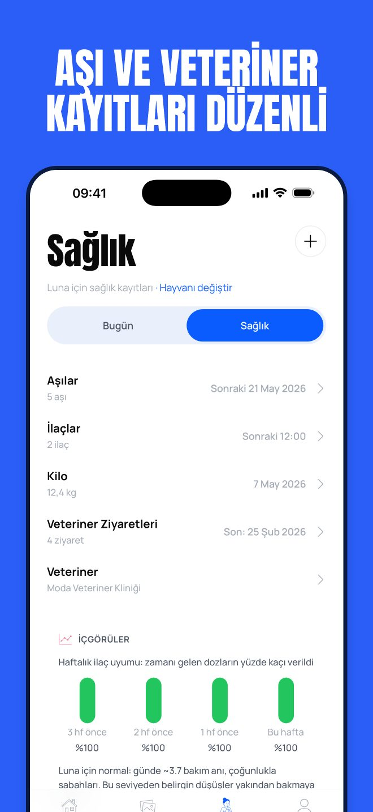
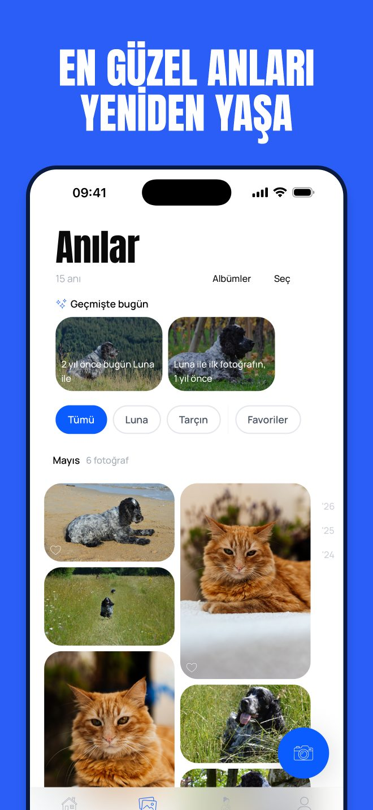
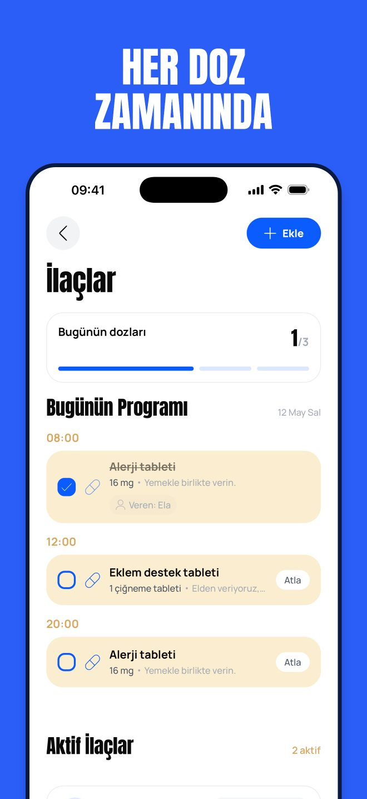

Pet Moments
Sağlık, Aşı ve İlaç Günlüğü
Kedinin ya da köpeğinin her dozu zamanında, her aşısı kayıtlı; kaybetmek istemediğin fotoğraflar da tek yerde.




Pet Moments ilaçları ve doz saatlerini takip eder, aşı zamanı gelmeden hatırlatır, veteriner ziyaretlerini ve kiloyu düzenli tutar. Hesap açmadan ücretsiz başla, gerektiğinde bakımı ailenle paylaş ve veterinerine saniyeler içinde düzenli bir kayıt ver.
İLAÇLAR VE DOZLAR
- Her ilacı doz saatleriyle ekle, her doz için hatırlatma al
- Verilen dozu tek dokunuşla işaretle, günün programını bir bakışta gör
- Doz düzenini ve serini izle, ilaç bitmek üzereyken haber al
- Reçete fotoğraflarını ait oldukları ilacın yanında sakla
AŞI, VETERİNER VE KİLO
- Aşıları kaydet; hangisi güncel, hangisi yaklaşıyor, hangisi gecikmiş gör
- Aşı zamanı yaklaşınca hatırlatma al
- Veteriner ziyaretlerini, rahatsızlıkları ve mikroçip numarasını kaydet
- Kilo değişimini grafikte izle
- Veterinerinin istediği kayıtlarla PDF veteriner dosyası oluştur
BİRLİKTE GEÇEN GÜNLERİN GÜNLÜĞÜ
- Fotoğrafları notlarıyla sakla, favorilerini işaretle, albümlerde topla
- Geçmişte bugün, önceki yıllarda aynı gün yaşadığınız bir anıyı getirir
- Bir anıyı hikâye kartı olarak paylaş
- Bir dostun aramızdan ayrılırsa kayıtları ve fotoğrafları seninle kalır
GÜNLÜK BAKIM
- Mama, su, yürüyüş, tımar ve tuvaleti tek dokunuşla kaydet
- Bugün neyin kaldığını gör, bakım serileri oluştur
- Her hayvan için haftalık rapor al
ORTAK BAKIM
- Aileni, bakıcını ya da köpek gezdiricini davet et
- Görev ata, kimin neyi yaptığını gör
- Kimin düzenleyebileceğini, kimin yalnızca görebileceğini seç
GİZLİLİK
- Reklam yok, verilerin asla satılmaz
- Hesap açmadan başla; cihazlar arası eşitleme için giriş yap
- Verilerini istediğin zaman dışa aktar
Ücretsiz planda 1 evcil hayvan, 1 doz saatiyle 1 aktif ilaç ve 5 fotoğraf var; ayrıca günlük bakım, temel sağlık kayıtları ve veri dışa aktarma da dahil. Premium sınırsız hayvan, ilaç ve fotoğrafın yanında ilaç başına birden çok doz saatini, ortak bakımı, reçete fotoğraflarını ve veteriner dosyasını açar.